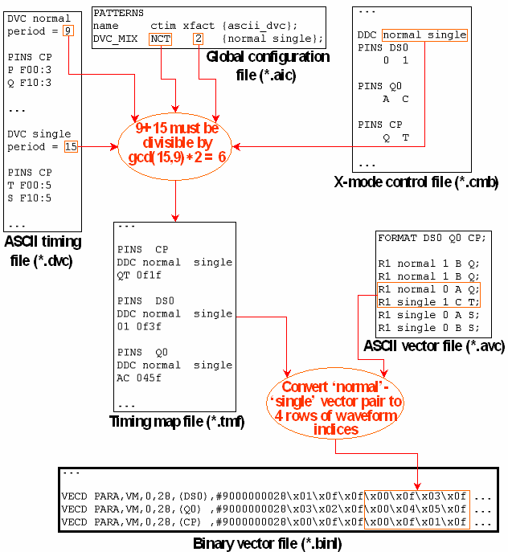

Creating Sequences from Several ASCII Device Cycles
Suppose that an x-mode factor > 1 is specified for a pattern that is associated with more than one ASCII device cycle. In this case the default behavior of the timing translation is to create waveforms only for state character sequences belonging to the same ASCII device cycle. This has the consequence that a pattern with an x-mode factor of 2 is not translatable if its ASCII vector file looks as follows:
FORMATDS0 Q0 CP;
R1normal1B Q;
R1normal1B Q;
R1normal0A Q;
R1single1C T;
R1single0A S;
R1single0B S;
Now, as long as normal and single are connected to different test system period lengths (by associating them with different timing sets in the pattern configuration file, see The Pattern Configuration File (*.vbc)), the combination normal, single makes no sense, and the vector translation will not accept it.
But when both these ASCII device cycles are associated with the same timing set, and therefore the same test system cycle length, then state character sequences belonging to different ASCII device cycles can also be mapped consistently to one (or more than one) physical waveform index. In order to generate such mixed sequences, you have to call ait with an x-mode control file (or with the option -K, see ait command line parameters).
Two ASCII device cycles are mapped to one timing set for two reasons, either because they have the same ASCII period, or because timing set changes are not allowed for the pattern, so that only one timing set is created for it. In the latter case, the test system cycle length is calculated as the greatest common divisor of the ASCII periods multiplied with the x-mode factor, which can result in mapping m state characters to n waveform DC/DC power units in the timing map file with m and n both > 1 (see also the ctim column in The PATTERNS Section).
The following figure displays an example of the required input and how it is processed in this more complex case:

In this example, the binary data of the VECD command is displayed in hexadecimal format.